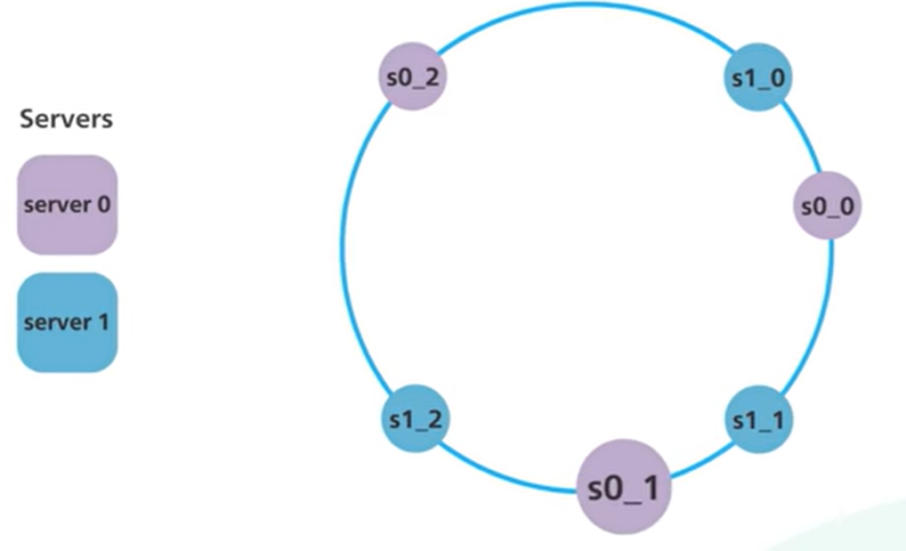

algorithms
Algorithms
Algorithm – A series of instructions that perform a task.
Big-O Notation
Used to describe time and space complexities of algorithms:
O(1)— O of 1 time aka constant timeO(n)— Linear timeO(log(n))— Logarithmic timeO(n^2)— Exponential timeLeast efficientO(n!)— Factorial time
Hashing
Credit: ByteByteGo blog
Simple Hashing
A mechanism to distribute data evenly across servers.
Implementing
-
For each object, hash its key with a hashing function (like MD5):
serverIndex = hash(object_key) % NwhereNis the size of the server pool
-
Perform modulo operation on the hash against the number of servers:
hash(object_key) % numberOfServersThis determines which server the object belongs to. As long as the number of servers stays the same, an object key will always map to the same server.
Assuming a cluster of 4 servers:

If Server 1 goes offline:
- The modulo operation changes from 4 to 3.
- Most of the keys (but not all) get distributed.
- A storm of misses and objects moving ensues.
The solution to this problem is consistent hashing.
Consistent Hashing
Hashing the object keys but also the server hostnames (or IP addresses) with the same hashing function to the same range of values:
Hash space: the range of x0 to xN:
Hash ring: created by connecting the end of the hash range:
Consistent hashing is used by:
- Apache Cassandra and Amazon DynamoDB for data partitioning
- CDNs to distribute web content evenly
- Load balances to distribute persistent connections evenly
Implementing
- Hash the server by its hostname or IP and place it on the hash ring.
- Hash the object key using the same hash function from step #1 and place it into the hash ring. The hash is used directly to map the object keys onto the ring:
- To locate a server for a particular object, go clockwise from the location of the object key on the ring until a server is found.
- If another server is added, only a fraction of the keys need to be redistributed:

- If server 1 is removed, only k1 needs to be remapped (to s2); the rest of the keys are unaffected:
Size of Segments
If server 1 is removed, the segment for server 2 is now twice the size as the ones for server 0 and server 3:
This is solved via virtual nodes. Each server appears multiple times on the ring. Each location is a virtual node representing a server:

Each server handles multiple segments on the ring (one for each of its virtual nodes):
As the number of virtual nodes increases, the distribution of objects becomes more balanced. But more virtual nodes means taking more space for the metadata of those nodes. This is a tradeoff.
Linked Lists
Elements are ordered one after another. They are not stored in contiguous locations. They are linked using pointers.
Linked Lists do not have indices. Each element is a node, which contains data and a reference to the next node. Size of a linked list is dynamic.
ele0 ele1 ele2 ele3
5 –> 8 –> 10 –> 13 –> null
head is 5
tail is null
setting 10 to null results in:
5 –> 8 –> null
Load Balancing Algorithms
Credit: ByteByteGo blog
Static load-balancing algorithms
- Round Robin — standard round robin
- Sticky Round Robin — if initial request goes to Service A, remaining requests from that user will “stick” to Service A.
- Weighted Round Robin — weight is specified for each service; the higher the weight, the more request that service handles.
- Hash — a hash function is applied on the incoming requests’ IP or URL; requests are routed to relevant service instances.
Dynamic load-balancing algorithms
- Least connections
- Least lag (fastest response time)
Queues
- A queue contains elements in the order they were added.
- Queues are FIFO: Elements are inserted at the end (enqueue) and removed from the beginning (dequeue).
- Queues do not have indices.
Blocking Queue
Credit: ByteByteGo blog
A blocking queue algorithm uses locks. Thread A acquires the lock first, and Thread B might wait for arbitrary lengthy periods if Thread A gets suspended while holding the lock. This algorithm may cause Thread B to starve.
Non-blocking Queue
The non-blocking algorithm allows Thread A to access the queue, but Thread A must complete a task in a certain number of steps. Other threads like Thread B may still starve due to the rejections.
This is the main difference between blocking and non-blocking algorithms: The blocking algorithm blocks Thread B until the lock is released. A non-blocking algorithm notifies Thread B that access is rejected.
Non-blocking Queue Implementation
Compare and Swap (CAS) can be used to implement a non-blocking queue:
Trees
A collection of nodes where each node can be linked to more nodes. Nodes are collected by links. Useful for nonlinear data.